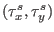
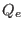
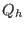
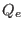
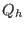

Next: Calculate the short-wave radiation Up: Fortran: Module Interface airsea_variables Previous: Heat and momemtum fluxes Contents
INTERFACE:
subroutine fairall(sst,airt,u10,v10,precip,evap,taux,tauy,qe,qh)DESCRIPTION:
The surface momentum flux vector,
,
in [Nm ],
the latent heat flux, ,
and the sensible heat flux, , both in [Wm
],
the latent heat flux, ,
and the sensible heat flux, , both in [Wm ]
are calculated here according to the Fairall et al. (1996b) bulk
formulae, which are build on the Liu-Katsaros-Businger
(Liu et al. (1979)) method.
Cool skin and warm layer effects are considered according to the
suggestions of Fairall et al. (1996a).
]
are calculated here according to the Fairall et al. (1996b) bulk
formulae, which are build on the Liu-Katsaros-Businger
(Liu et al. (1979)) method.
Cool skin and warm layer effects are considered according to the
suggestions of Fairall et al. (1996a).
The air temperature airt and the sea surface temperature sst may be given in Kelvin or Celcius: if they are 100 - Kelvin is assumed.
This piece of code has been adapted from the COARE code originally written by David Rutgers and Frank Bradley - see http://www.coaps.fsu.edu/COARE/flux_algor/flux.html.
USES:
use airsea_variables, only: kelvin,const06,rgas,rho_0,g,rho_0,kappa
use airsea_variables, only: qs,qa,rhoa
use airsea_variables, only: cpa,cpw
use airsea, only: rain_impact,calc_evaporation
IMPLICIT NONE
INPUT PARAMETERS:
REALTYPE, intent(in) :: sst,airt,u10,v10,precipINPUT/OUTPUT PARAMETERS:
REALTYPE, intent(inout) :: evapOUTPUT PARAMETERS:
REALTYPE, intent(out) :: taux,tauy,qe,qhREVISION HISTORY:
Original author(s): Adolf Stips
$Log: fairall.F90,v $
Revision 1.8 2009-01-07 07:25:38 kb
fixed various compilation warnings found by gfortran
Revision 1.7 2008-07-07 09:05:08 lars
corrected typo in documentation
Revision 1.6 2008-04-08 16:09:00 kb
assure valid qh and qe under all circumstance - Bruggeman, Stips
Revision 1.5 2008-01-02 15:30:44 kb
added link to Fairall page
Revision 1.4 2007-12-21 12:38:03 kb
added precip/evap to kondo + cleaned
Revision 1.3 2007-12-19 10:41:20 kb
fixed m/s --> kg/m2/s conversion bug - Stips
Revision 1.2 2007-10-02 10:14:08 kbk
fixed rhoa calculation - rgas in airsea_variables module
Revision 1.1 2007-09-25 10:06:10 kbk
modularized the airsea module - added Fairall method
DEFINED PARAMETERS:
Fairall LKB roughness Reynolds number to Von Karman
REALTYPE,parameter :: fdg = 1.0 ! non-dimensional
Beta parameter evaluated from Fairall low windspeed turbulence data.
REALTYPE,parameter :: beta = 1.2 ! non-dimensional
Zabl Height (m) of atmospheric boundary layer.
REALTYPE,parameter :: Zabl = 600.0 ! in [m]
REALTYPE, parameter :: r3 = 1.0/3.0
Liu et al. (1979) look-up table coefficients to compute roughness
Reynolds number for temperature (rt) and moisture (rq) as a
function of wind Reynolds number (rr):
rt = Liu_a(:,1) * Rr ** Liu_b(:,1) temperature
rq = Liu_a(:,2) * Rr ** Liu_b(:,2) moisture
REALTYPE,parameter, dimension(8,2) :: Liu_a = reshape ( &
(/ 0.177, 1.376, 1.026, 1.625, &
4.661, 34.904, 1667.190, 588000.0, &
0.292, 1.808, 1.393, 1.956, &
4.994, 30.709, 1448.680, 298000.0 /), &
(/ 8, 2 /) )
REALTYPE,parameter, dimension(8,2) :: Liu_b = reshape ( &
(/ 0.0, 0.929, -0.599, -1.018, &
-1.475, -2.067, -2.907, -3.935, &
0.0, 0.826, -0.528, -0.870, &
-1.297, -1.845, -2.682, -3.616 /), &
(/ 8, 2 /) )
REALTYPE,parameter, dimension(9) :: Liu_Rr = &
(/ 0.0, 0.11, 0.825, 3.0, &
10.0, 30.0, 100.0, 300.0, &
1000.0 /)
Height (m) of surface air temperature measurement.
REALTYPE, parameter :: zt= 2.0
Height (m) of surface air humidity measurement
REALTYPE, parameter :: zq= 2.0
Height (m) of surface winds measurement
REALTYPE, parameter :: zw= 10.0
integer, parameter :: itermax = 20
#ifdef GUSTINESS
REALTYPE, parameter :: wgust=0.2
#else
REALTYPE, parameter :: wgust=0.0
#endif
REALTYPE,external :: psi
LOCAL VARIABLES:
REALTYPE :: tmp,cff,wgus
REALTYPE :: L
REALTYPE :: Cd
REALTYPE :: ta,ta_k,tw,tw_k
integer :: ier,iter,k
REALTYPE :: vis_air
REALTYPE :: tpsi,qpsi,wpsi,ZWoL,oL,ZToL,ZQoL,ZoW,ZoT, ZoQ
REALTYPE :: Wstar,Tstar, Qstar, delQ, delT, rr,rt,rq
REALTYPE :: TVstar,Bf, upvel,delw,Wspeed, w
REALTYPE :: ri,cd_rain
REALTYPE :: x1,x2,x3
REALTYPE :: x
REALTYPE :: rainfall
REALTYPE, parameter :: eps=1.0e-12